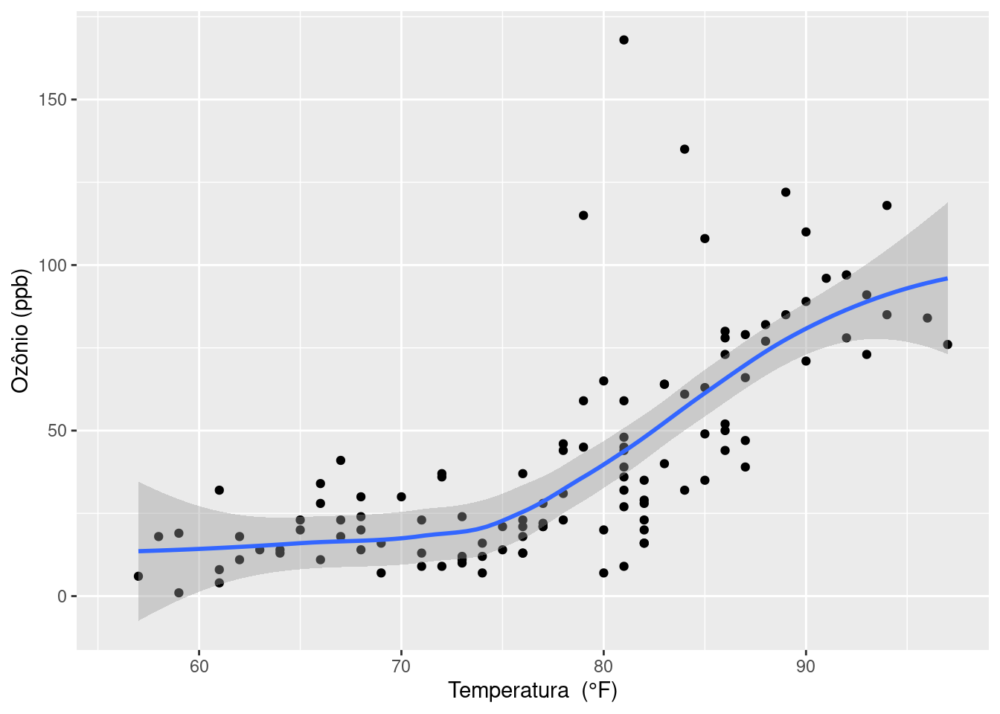
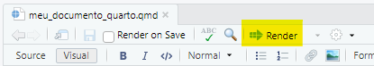
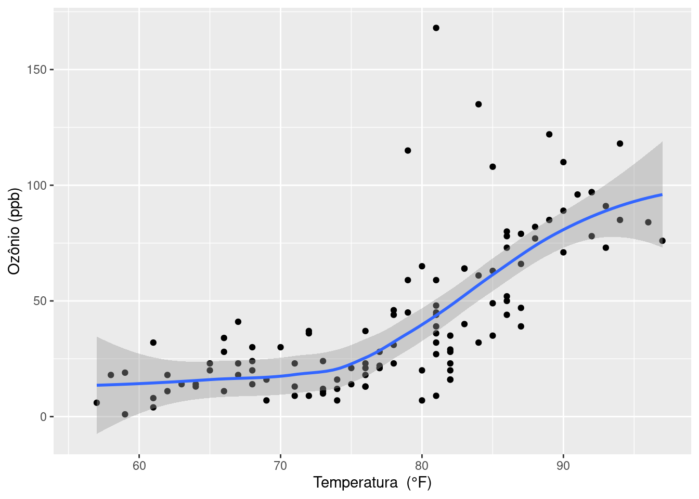

library(ggplot2)
ggplot(airquality, aes(Temp, Ozone)) +
geom_point() +
geom_smooth(method = "loess") +
labs(x = "Temperatura (°F)", y = "Ozônio (ppb)")
Esse conteúdo foi baseado no livro R for Data Science, 2nd Edition de WICKHAM; ÇETINKAYA-RUNDEL; GROLEMUND (2023), no tutorial E aí, vamos falar de Quarto? disponível em https://rladies-sp.org/posts/2023-02-tutorial-quarto/ e no guia do Quarto disponível em https://quarto.org/docs/guide/.
O Quarto oferece um framework unificado de autoria para ciência de dados, combinando seu código, seus resultados e seu texto. Os documentos do Quarto são totalmente reproduzíveis e suportam dezenas de formatos de saída, como PDFs, arquivos do Word, apresentações e muito mais.
Os arquivos do Quarto são versáteis e destinam-se a três usos principais:
Comunicar conclusões a tomadores de decisão que não desejam se aprofundar no código;
Colaborar com outros cientistas de dados interessados em conclusões e metodologia;
Servir como um ambiente de ciência de dados no qual você pode capturar não apenas o que fez, mas também o que estava pensando.
Quarto não é um pacote do R, é uma ferramenta de linha de comando qu epode ser usada no RStudio. Ele representa uma evolução do R Markdown e oferece suporte nativo a várias linguagens de programação, incluindo Python e Julia, além do R.
Baixar e instalar a versão mais recente do:
Quarto;
R;
RStudio.
Uma alternativa é o uso do Posit Cloud (https://posit.cloud/), que simplifica a exploração das ferramentas do RStudio na nuvem, sem a necessidade de configurações complexas.
Primeiro crie um projeto.

O arquivo quarto editável tem extensão .qmd. Para renderizá-lo clique em render ou utilize o atalho do teclado CTRL + SHIFT + K.

Um documento em quarto é composto por três partes:
YAML (Yet Another Markup Language, Mais uma linguagem de marcação): a seção inicial do documento onde são especificadas configurações como formatação, data, título, autor, e outros detalhes. Essa seção é sempre posicionada no início do documento e é delimitada por - - -.
Texto: utiliza a sintaxe do Markdown como seu principal formato de documento;
Código: é compatível com várias linguagens, o que permite a inserção de blocos de código em R, Python, Julia e outras.
Abaixo temos um exemplo de cabeçalho com as configuraçãoes iniciais e diretrizes para criação do arquivo. Iremos detalhar cada um deles.
---
title: "Meu primeiro documento" # -----> Título
format:
html: # formato do documento gerado
code-fold: true # oculta o bloco de códigos
lang: pt # Linguagem: português
---Em YAML, os elementos são chamados de pares chave-valor.
Algumas chaves que podemos usar no YAML são:
title: para inserir o título do documento
author: para indicar o nome do(a) autor(a). Esta chave possui sub-chaves adicionais para artigos acadêmicos.
---
author:
name: Sadraque E. F, Lucena # nome
affiliation: Universidade Federal de Sergipe # instituição
------
author:
- name: Sadraque E. F, Lucena
affiliation:
- Universidade Federal de Sergipe
- Funpresp-Exe
- name: Fulano de Tal
affiliation: Universiade Federal da Bahia
---lang:
date:
Para obter mais informações sobre autoria, filiação, resumo, palavras-chave, etc., visite: https://quarto.org/docs/authoring/front-matter.html.
Para dominar o uso do Quarto é essencial começar pelos blocos de código. Eles constituem a base para incorporar análises, visualizações e interatividade no desenvolvimento de documentos.
Os blocos de código iniciam com três crases seguidos do nome da linguagem utilizada. Em seguida você pode definir configurações ou parâmetros para o bloco de código. Algumas das principais opções são:
#| echo: controla se o código é exibido no documento.
#| eval: determina se o código é executado e a saída apresentada.
#| warning: controla a exibição de mensagens de aviso geradas pelo código.
#| error: determina se os erros devem ser incluídos na saída.
#| include: controla se o trecho de código e a saída são incluídos no documento renderizado.
#| label: rótulo dado para fazer referência. Uma vez definido um rótulo, você pode referenciá-lo usando @nome_do_rotulo.
#| fig-cap: adiciona uma legenda a gráficos gerados pelo código.
Exemplo:
A Figura 1 explora o impacto da temperatura no nível de ozônio.
library(ggplot2)
ggplot(airquality, aes(Temp, Ozone)) +
geom_point() +
geom_smooth(method = "loess") +
labs(x = "Temperatura (°F)", y = "Ozônio (ppb)")
Se preferir, você pode incluir as configurações na primeira linha do trecho de código (```{r, echo = FALSE}), mas é menos recomendado.
Outro exemplo:
str(airquality)'data.frame': 153 obs. of 6 variables:
$ Ozone : int 41 36 12 18 NA 28 23 19 8 NA ...
$ Solar.R: int 190 118 149 313 NA NA 299 99 19 194 ...
$ Wind : num 7.4 8 12.6 11.5 14.3 14.9 8.6 13.8 20.1 8.6 ...
$ Temp : int 67 72 74 62 56 66 65 59 61 69 ...
$ Month : int 5 5 5 5 5 5 5 5 5 5 ...
$ Day : int 1 2 3 4 5 6 7 8 9 10 ...Mais um exemplo:
head(airquality)Algumas opçoes são: itálico, negrito, itálico negrito, sobrescrito2, subscrito2, riscado, código literal.
Uma seção e as subseções são definidas pela quantidade de #. Exemplos:
Para acessar a página web do Quarto, visite https://quarto.org. Você também pode consultar o guia de uso do Quarto para mais informações, explorar recursos avançados e manter-se atualizado.
A imagem abaixo apresenta a logo do Quarto. Por padrão, a o tmanho é dado em pixels, mas você também pode definí-lo em porcentagem (exemplo: {width=80%}), em centímetros (exemplo: {width=5cm}) ou polegadas (exemplo: {width=4in}). Você também pode colocar vários definições da imagem em argumentos separados por espaço.

Também é possível juntar mais de uma figura.
Listas em Quarto requerem uma linha em branco inteira acima da lista. Caso contrário, a lista não será exibida no formato de lista, e todo o conteúdo aparecerá como texto comum em uma única linha. Subitens são identificados com um tab.
| Default | Esquerda | Direita | Centro |
|---|---|---|---|
| 12 | 12 | 12 | 12 |
| 123 | 123 | 123 | 123 |
| 1 | 1 | 1 | 1 |
Também é possível usar tabelas de grade, que são um tipo mais avançado de tabelas em Markdown que permitem elementos de bloco arbitrários (múltiplos parágrafos, blocos de código, listas, etc.). Por exemplo:
| Fruta | Preço | Vantagens |
|---|---|---|
| Banana | R$3,50/kg |
|
| Laranja | R$6,99/kg |
|
Utilize delimitadores $ para fórmulas e símbolos matemáticos embutidos no texto e $$ fórmulas e símbolos matemáticos destacados. Você pode usar os comandos do LaTeX no ambiente matemático.
Exemplo: Seja \(X\sim N(\mu, \sigma^2)\) uma variável aleatória. Sua função de densidade é dada por
\[ f(x) = \frac{1}{\sigma \sqrt{2 \pi}} e^{-\frac{(x-\mu)^2}{2\sigma^2}}, \] em que \(-\infty<x<\infty\), \(-\infty<\mu<\infty\) e \(\sigma^2>0\).
Existem várias formas de fazer citação em Quarto. Vamos ver a citação em BibLaTeX (arquivos com extensão .bib).
Primeiro você precisa informar o arquivo com as referências no YAML. Por padrão é usado o formato Chicago Manual of Style com autor e data, mas você pode especificar uma formatação personalizada usando o CSL (Citation Style Language). Você pode encontrar arquivos CSL ou saber mais sobre como usar estilos no Projeto CSL. Você pode navegar na lista de mais de 8.500 definições CSL Creative Commons no repositório central do Projeto CSL ou no repositório de estilos do Zotero. Exemplo:
---
title: Título
bibliography: references.bib
csl: abnt.csl
---Os tipos de citação mais comuns são WICKHAM; ÇETINKAYA-RUNDEL; GROLEMUND (2023) e (WICKHAM; ÇETINKAYA-RUNDEL; GROLEMUND, 2023). O arquivo csl com a formatação da ABNT pode ser encontrada aqui.
Quarto Pub é um serviço gratuito de publicação para conteúdo criado com o Quarto. O Quarto Pub é ideal para blogs, sites de cursos ou projetos, livros, apresentações e sites pessoais.
Todos os documentos e sites publicados no Quarto Pub são visíveis publicamente, não podem ter tamanho superior a 100 MB e possuem um limite de tráfego de dados de 10 GB por mês.
Para publicar, abra a aba Terminal e execute quarto publish.
Se a aba não estiver visível, mostre-a usando Shift+Alt+T (ou clique em Tools->Terminal->Move Focus to Terminal).